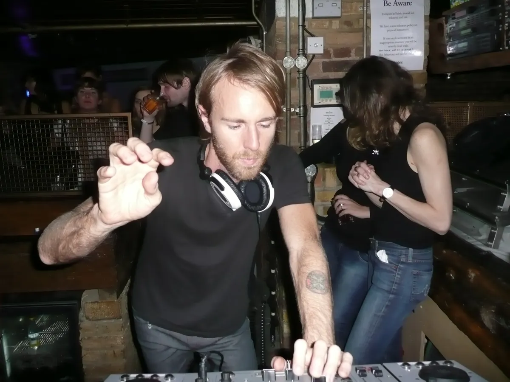

Techno tracks
Best techno tracks: nine records that built the sound
Nine techno records grouped by scene, each with a player and the facts behind it, from Detroit in 1985 to 2021.
A list of records, not a history.
This is a list of tracks. For the history of the genre, read the techno music guide. For recorded DJ sets, read best techno mixes. Here every entry is one record with a player under it. The records are grouped by scene, oldest first within each group.
How these techno tracks were chosen.
The best techno tracks are the ones other lists keep returning to, plus three I added because the story has a gap without them. I read three published lists of techno tracks on 6 October 2026: Time Out New York's best techno songs of all time, Benjamin Damage's ten for Dummy, and Music Industry How To's list of techno songs. Six of my nine appear on at least one of them. Strings of Life, Phylyps Trak and Doppler appear on none. Strings of Life is here because Roland and Red Bull Music Academy both write about it at length, Phylyps Trak because dub techno has no record on those lists, and Doppler because it is the newest record on this page.
The table gives the year and label for each record, and how many of the three lists name it.
| Track | Artist | Year | Label | Named on the three lists |
|---|---|---|---|---|
| No UFO's | Model 500 | 1985 | Metroplex | 1 |
| Strings of Life | Rhythim Is Rhythim | 1987 | Transmat | 0 (my addition) |
| Energy Flash | Joey Beltram | 1990 | R&S Records | 2 |
| Spastik | Plastikman | 1993 | Plus 8 | 2 |
| The Bells | Jeff Mills | 1996 | Purpose Maker | 2 |
| Phylyps Trak | Basic Channel | 1993 | Basic Channel | 0 (my addition) |
| Subzero | Ben Klock | 2009 | Ostgut Ton | 1 |
| Jaguar | The Aztec Mystic | 1999 | Underground Resistance | 1 |
| Doppler | Charlotte de Witte | 2021 | KNTXT | 0 (my addition) |
Dates come from the labels, the artists or the pieces linked in the sources. Where sources disagree, the section says so.
Detroit and Chicago, 1985 to 1987.
No UFO's by Model 500 (1985)
Juan Atkins released No UFO's on his own Metroplex label in 1985, after his time in Cybotron. Attack Magazine says it helped push dance music on from electro and Italo disco into something starkly new. It got airplay in Detroit and took off in Chicago. Unlike later techno, it has a clear verse and chorus structure, which suits a record made for radio. The player is the vocal version.
Strings of Life by Rhythim Is Rhythim (1987)
Derrick May released Strings of Life on his Transmat label in 1987. Roland describes stabbing keys and space-age synth strings running for seven and a half minutes with no bassline at all. Frankie Knuckles suggested the name. May has said his first ambition was to get Ron Hardy and Knuckles to play his records in Chicago. In a Red Bull Music Academy interview he says the music sold mainly in Europe, and that this made him angry.
Rave pressure and acid minimalism, 1990 to 1996.
Energy Flash by Joey Beltram (1990)
Joey Beltram made Energy Flash in 1989, when he was 19, and R&S Records released it in 1990. Derrick May's Transmat licensed it in the United States. Attack Magazine describes it as dark, moody and heavy, a pushback against the feel-good melodies of Italo piano house and New York garage. Two of the three lists name it. The player below is R&S's own remaster.
Spastik by Plastikman (1993)
Richie Hawtin released Spastik as Plastikman on Plus 8 in 1993. Insomniac lists an 808, a 909, a 707 and a 303 on it, and quotes Hawtin calling the recording just him jamming. The track runs a taut eight minutes. It never had radio play, yet the producer Todd Osborn told Insomniac the record was everywhere. The player below is the version on the Recycled Plastik album, so it may differ from the original single.

The Bells by Jeff Mills (1996)
Jeff Mills made The Bells in 1994 and released it on Purpose Maker in the spring of 1996. XLR8R quotes him saying he has played it every time he has DJed since, and that it is something he can use to say hello to the people. That habit is why I would put it first if you only play one.
Berlin and dub techno.
Phylyps Trak by Basic Channel (1993)
Moritz von Oswald and Mark Ernestus released Phylyps Trak as Basic Channel in 1993, catalogue number BC02. Resident Advisor's review describes a fast tempo driving a 909 and a conga rhythm track, busy and relentless, and says the earliest Basic Channel records still sound like Detroit techno meeting Kingston by way of Berlin. The player is a streaming copy, so it may differ from the 1993 vinyl.
Subzero by Ben Klock (2009)
Ben Klock released Subzero on Ostgut Ton on 12 January 2009, on the Before One EP. Music Industry How To dates it to 2015, which conflicts with Klock's own Bandcamp page, so I use 2009.
A track of mine belongs beside this section because of where it was made, not what it is. I produced Berlin Race 1909 while living in Berlin, and it is not on this list.
Underground Resistance and Doppler.
Jaguar by The Aztec Mystic (1999)
DJ Rolando released Jaguar as The Aztec Mystic on Underground Resistance in 1999, on the Knights of the Jaguar single. Insomniac describes his sound as techno with Latin percussive styles, and quotes him saying his father was a musician in a Mexican band. I could not confirm the month or catalogue number from a primary source, so I give the year only.
Doppler by Charlotte de Witte (2021)
Charlotte de Witte released Doppler on KNTXT on 30 April 2021, as the first track on the Formula EP alongside RPM and Formula. Her Bandcamp page describes shuffling drums with urgent, alarm-like synths. It is the newest record on this page.
Which techno track should you play first?
If you want good techno songs for a first listen, start with The Bells, then Strings of Life, then Energy Flash: a record Mills uses to say hello, one built on keys and strings, and one that is dark and heavy.
For Berlin, go to Phylyps Trak and Subzero. For the newest record here, go straight to Doppler.
A break from the list.
One more of my own tracks. No Genre No Problem is my first finished track, and it is not on any list on this page.
Techno tracks FAQ.
What are the best techno songs of all time?
No ranking is final. This page's nine are No UFO's, Strings of Life, Energy Flash, Spastik, The Bells, Phylyps Trak, Subzero, Jaguar and Doppler. Six of them appear on at least one of three published lists.
What is the best techno song ever?
There is no single answer. The Bells is a good first pick, because Jeff Mills says he has played it every time he has DJed since he made it.
What are good techno songs for a beginner?
Start with The Bells, Strings of Life and Energy Flash, then move to Phylyps Trak for the dub techno side.
What is a famous techno song?
If you mean one famous techno song, Energy Flash, Spastik and The Bells are each named on two of the three lists.
What are the top 20 techno songs?
This page lists nine, not twenty, so that each record gets its own reason and its own player.
Sources.
- Attack Magazine: Deconstructed, Model 500, No UFO's
- Roland Articles: Strings of Life, Derrick May
- Red Bull Music Academy Daily: Derrick May interview
- Insomniac: Rhythim Is Rhythim, Strings of Life
- Insomniac: DJ Rolando, Knights of the Jaguar
- Attack Magazine: Joey Beltram, Energy Flash
- Insomniac: From the Crate, Plastikman, Spastik
- XLR8R: Jeff Mills, The Bells
- Resident Advisor: RA Rewind, Basic Channel, Phylyps Trak
- Ben Klock on Bandcamp: Subzero
- Charlotte de Witte on Bandcamp: Formula EP
- Time Out New York: Best techno songs of all time
- Dummy: The 10 best techno tracks according to Benjamin Damage
- Music Industry How To: Techno songs
Continue reading
Read next.
 Rave spots~10 min read
Rave spots~10 min readBest Clubs in Berlin: The Legends and the Ones Still Open
The rooms that made Berlin a techno city, the famous clubs that closed, and the best clubs in Berlin that are still open.
Read article → Rave spots~10 min read
Rave spots~10 min readBerghain: Panorama Bar, Sound and Residents
Berghain explained: the former power station, Panorama Bar upstairs, Halle am Berghain, the Kantine, and the Ostgut Ton label.
Read article → Rave spots~6 min read
Rave spots~6 min readBest Clubs in Paris: From Le Palace to Rex Club
Le Palace, Les Bains Douches and Rex Club: the clubs that made Paris nightlife, how each became famous, and the best clubs in Paris open now.
Read article → Rave spots~6 min read
Rave spots~6 min readBest Clubs in Barcelona: From Zeleste to Razzmatazz
Razzmatazz, Nitsa and Macarena Club: how Barcelona's biggest club grew out of a 1970s live venue, and the best clubs in Barcelona open now.
Read article →